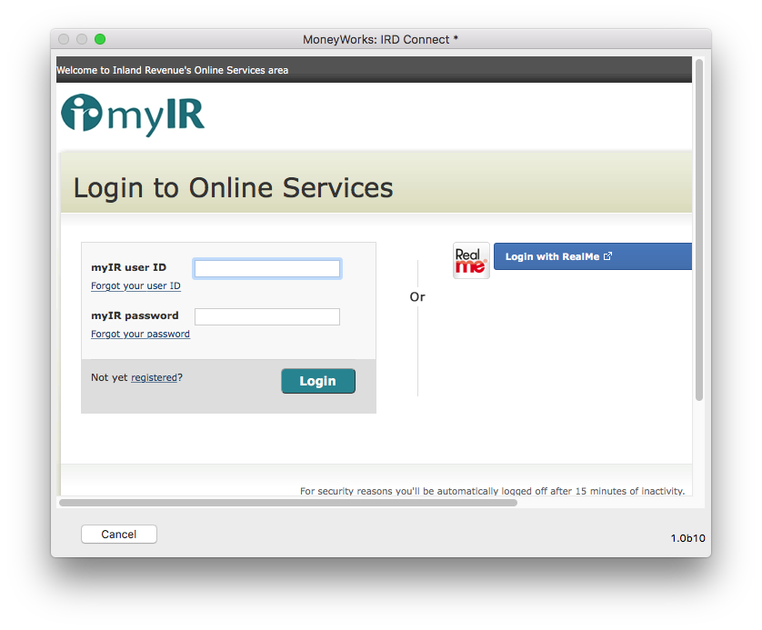
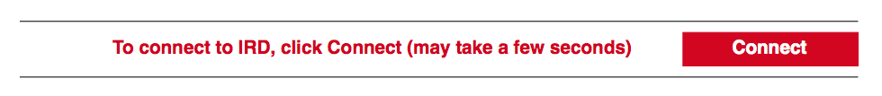
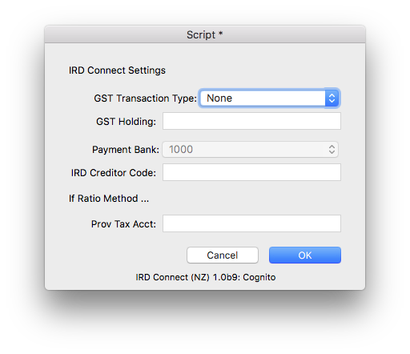

MoneyWorks Manual
Using IRD Connect in MoneyWorks
To start the IRD Connect process, choose Command>IRD Connect... to open the IRD Login window:

Note: The IRD Connect... command is only available to users who have the GST Report/Finalisation User Privilege turned on.
Note: You can also connect to the IRD by clicking the Connect button in the Preview of the GST Guide:

Note: A connection to the IRD will expire after about fifteen minutes of no activity, and you will need to re-login.
Note: You must have your IRD number set in the IRD# field in Show>Company details. This is a nine digit number (normally the same as your GST number, but with a leading zero if required).
If this is the first time you have used the IRD Connect command, you will be prompted to enter some required settings – these determine what type of MoneyWorks transaction, if any, will be created when you Submit your GST:

The following information is required:
GST Transaction Type: The type of transaction to create when you submit using IRD Connect. If this is set to "None", no transaction will be created (and no other fields need to be entered in the Settings). If set to "Payment", a payment transaction will be created against the nominated bank account. If set to "Invoice", a supplier invoice will be created for the nominated IRD creditor code.
GST Holding: This is your GST Holding account. It should be the same as that used in the GST Finalisation section of the GST Report.
Payment Bank: The bank account against which the payment is to be made.
IRD Creditor Code: The creditor code for IRD. You will need to set up IRD as a creditor in MoneyWorks if you want to create an invoice. When you submit a return using IRD Connect, a creditor invoice will be created which you can mark off as being paid once you have actually paid your GST (or received a refund).
Prov Tax Acct: If you are on the Ratio Method, this is the account for the provisional tax portion of your payment. If you leave it blank the GST Holding will be used.
If you need to alter your settings subsequently, click the Settings button in the IRD Connect window.